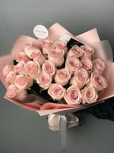
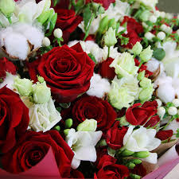
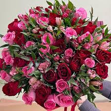
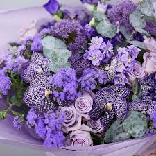
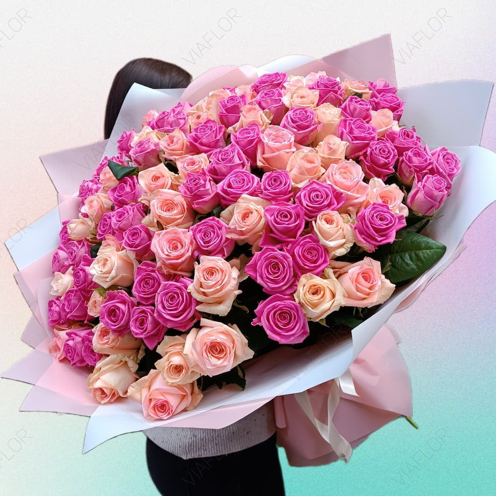
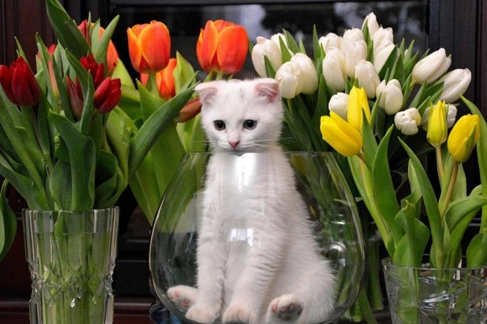
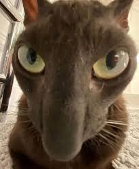
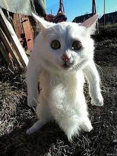
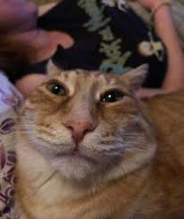
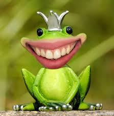

ОТКРЫТКА К ЦВЕТАМ.
Что я ценю в Софии
- Доброту и чесность
- Твой красивый локон
- Чувство юмора (И даже шутки про говно!)
- Внеземную красоту (НИХЕРА СЕБЕ КРАСОТКА, ОПЯТЬ ВСПОМНИЛ ЕЕ)
- Твои рисунки и твой талант
- Клевую попу (не смог сдержаться, что бы не сказать)
- Полет души
- За самые лучшие моменты в жизни что ты подарила
- Саркастичсность
- Иногда порой жестокость
- Моменты романтичности
- За твою начитаность
- За твой стиль
- За вдохновение которое ты мне даешь
ЦВЕТЫ КОТОРЫЕ Я ТЕБЕ ДАРЮ






А ЕЩЕ ДЕРЖИ ВСРАТЫШЕЙ



